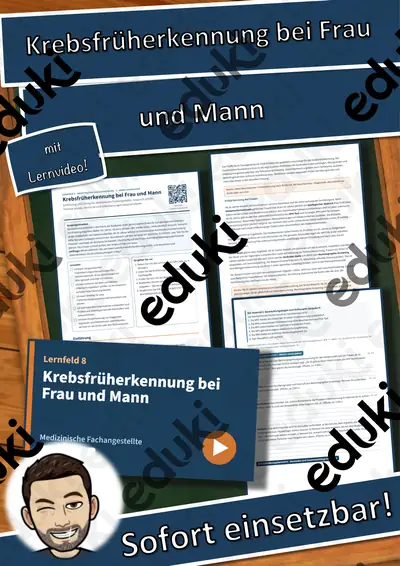
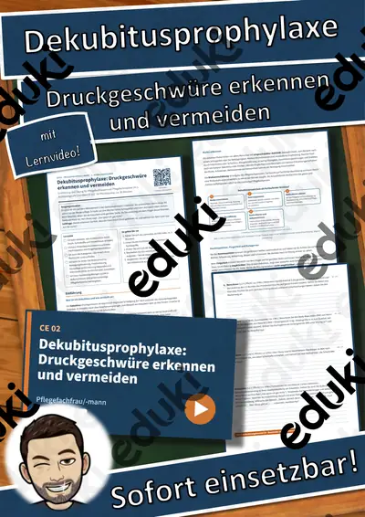

Rollenbilder im Wandel – Gleichberechtigung von Frau und Mann – Lesespurgeschichte mit Rätselaufgaben (Klasse 10)
Rollenbilder im Wandel – Gleichberechtigung von Frau und Mann – Lesespurgeschichte Ethik (Klasse 10)Begib dich mit deiner Klasse auf eine spannende Lesespur über Rollenbilder und Gleichberechtigung! Johanna und Levin besuchen das Stadtfest „Zeitreise-Straße", in der jedes Haus eine andere Zeit zeigt: das Wahllokal von 1919, als Frauen zum ersten Mal wählen durften, die Grundgesetz-Tafel mit Artikel 3, die Küche der 50er-Jahre mit dem damaligen Rollenbild, ein modernes Büro, einen Fußballplatz mit einer überraschenden Geschichte, einen Spielzeugladen voller Klischees, eine Werkstatt mit untypischen Berufswegen und eine Kita, in der ein Vater in Elternzeit sein Baby abholt. Ihre kleine Taschenuhr Tick ist immer dabei. Am Ende jedes Abschnitts verrät ein Hinweis den nächsten Ort auf dem Straßen-Plan – nur wer richtig liest und mitdenkt, findet den Weg und sammelt alle geheimen Buchstaben zum Lösungswort.
Die perfekte Lesespur für den ETHIKUNTERRICHT der 10. Klasse: Sie verbindet motivierendes, sinnentnehmendes Lesen mit sachlichen Gesprächsanlässen über Rollenbilder, Gleichberechtigung und das eigene Rollenverständnis – und schult zugleich das genaue Arbeiten. Das Material ist SOFORT EINSETZBAR und in DREI DIFFERENZIERUNGSSTUFEN (leicht ★ / mittel ★★ / schwer ★★★) angelegt. Sachlich, ohne erhobenen Zeigefinger und parteipolitisch neutral; alle Jahreszahlen wurden geprüft.WICHTIG: Das komplette Material ist sowohl in FARBE als auch in SCHWARZ-WEISS enthalten – ideal zum Sparen von Druckkosten.DAS IST ENTHALTEN
- Lesespurgeschichte in 3 Niveaus (leicht, mittel, schwer)
- farbiger Straßen-Plan als Suchkarte
- Hörverstehen mit QR-Code zur MP3 (selbstständiges Hören mit Kopfhörern)
- vier Aufträge auf dem Weg: ein Zuordnungs-Rätsel, ein Quiz, eine Rechenaufgabe und ein Steckbrief
- Rätselseite (Wörter-Suchsel + Wissensfragen)
- Ausmalbild zum Thema
- ausführliches Lösungsblatt für die Lehrkraft
- alles zusätzlich als komplette Schwarz-Weiß-VarianteSO FUNKTIONIERT DIE LESESPURDie Jugendlichen lesen ab START, entnehmen dem Text einen Hinweis auf einen Ort der Zeitreise-Straße, suchen ihn auf dem Plan und lesen bei dieser Station weiter. An jeder richtigen Station gibt es einen Sammelbuchstaben. Eingebaute Sackgassen (Kiosk, Parkplatz, Brunnen, Tankstelle) liegen zwar an der Straße, sind aber keine Stationen und dienen der Selbstkontrolle. Am Ende werden die gesammelten Buchstaben umgestellt und ergeben ein geheimes Lösungswort. (Die Lösungen sind selbstverständlich nur im Lösungsblatt für die Lehrkraft enthalten.)INHALTLICHER SCHWERPUNKTIn gut hundert Jahren haben sich die Rollen von Frauen und Männern in Deutschland stark verändert: 1919 wählten Frauen zum ersten Mal in ganz Deutschland mit, 1949 wurde die Gleichberechtigung in Artikel 3 des Grundgesetzes verankert – maßgeblich durchgesetzt von der Juristin Elisabeth Selbert. Doch bis 1977 legte das Gesetz fest, dass eine Ehefrau nur arbeiten durfte, wenn es mit ihren Familienpflichten vereinbar war, und Frauenfußball war in den Vereinen des großen Fußballverbands von 1955 bis 1970 verboten. Heute holen Väter ihre Babys in Elternzeit ab, junge Frauen reparieren Autos und junge Männer lernen Pflegeberufe. Die Jugendlichen unterscheiden gleiche Rechte von gleichen Chancen (Lohnlücke, Sorgearbeit), erkennen Rollenklischees in Spielzeug und Werbung und reflektieren ihr eigenes Rollenverständnis.ABGEDECKTER LEHRPLAN (Klasse 10, Ethik)
- Ethik (LehrplanPLUS Bayern) – „Typisch Mann – typisch Frau?" (Realschule Klasse 10): sich das eigene Rollenverständnis bewusst machen, Geschlechterrollen in verschiedenen Kulturen und Zeiten erfassen, die Gleichberechtigung von Mann und Frau schätzen und individuelles Rollenverhalten tolerieren.
- Deutsch – Lesen mit Texten und Medien umgehen: Lesestrategien anwenden, Texten gezielt Informationen entnehmen, sinnentnehmend und selektiv lesen; Zuhören: einem Sachhörtext konzentriert folgen (Hörverstehen mit MP3).
- Mathematik – Rechnen im Sachzusammenhang.
- Fächerübergreifend / Kompetenzen: Demokratiebildung, Geschichte, Berufsorientierung, Werteerziehung, genaues Lesen und Prüfen, kreatives Gestalten (Ausmalbild).
Geeignet für Freiarbeit, Stationenlernen, Vertretungsstunden, Wochenplan, Projekttage und Homeschooling. Klassenstufe 10 (differenziert einsetzbar auch in Klasse 9).
Ähnliche Materialien

Gleichberechtigung Lückentext mit Wortspeicher Hörverstehen und Suchsel

Johanna Spyri Lückentext mit Wortspeicher Hörverstehen und Suchsel

Thomas Mann Lückentext mit Wortspeicher Hörverstehen und Suchsel

Der Mann aus dem Eis – ein Gletscherfund aus der Jungsteinzeit – Lesespurgeschichte mit Rätselaufgaben (Klasse 6)

LF 8 Medizinische Fachangestellte: Krebsfrüherkennung bei Frau und Mann – Übungen, Lösungen + Lernvideo

CE 02 Pflegefachfrau/-mann: Dekubitusprophylaxe: Druckgeschwüre erkennen und vermeiden – Übungen, Lösungen + Lernvideo

Die Anfänge der Philosophie – eine Zeitreise ins antike Athen – Lesespurgeschichte mit Rätselaufgaben (Klasse 10)